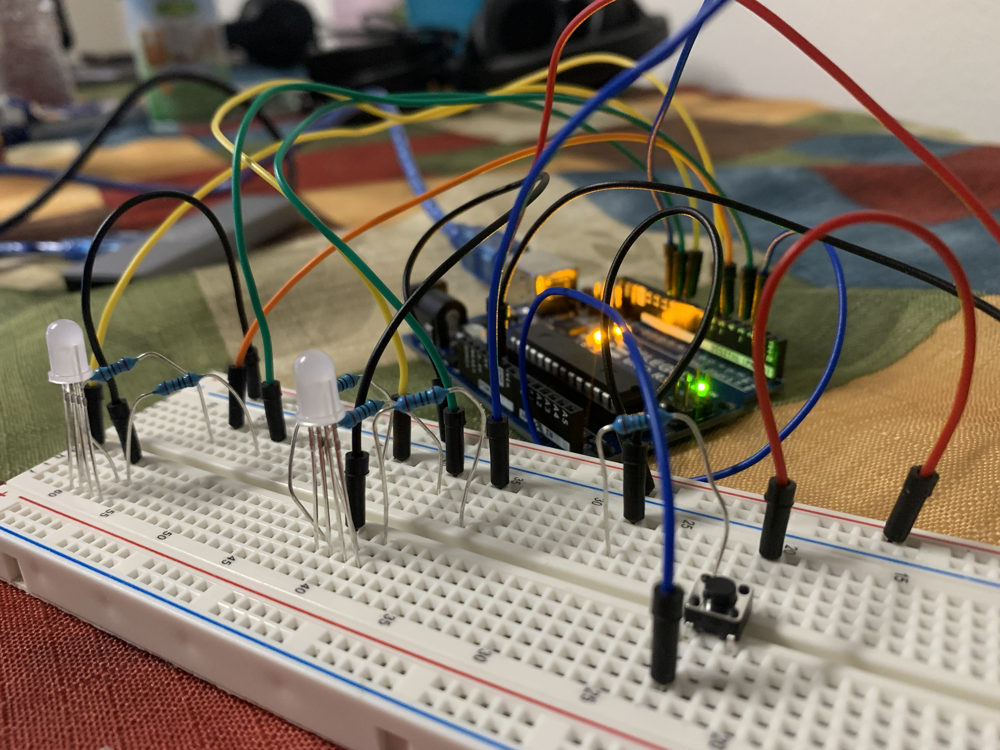

Alida's Assignment 2!

Here is all the documentation for assignment 2! Included are the schematic, circuit and firmware! Normally to calculate for the type of resistor, you would use Ohm's Law V=I X R to calculate for resistance, but in this case Nadya mentioned it was fine to use 220 ohms because we are working with such a small voltage. For all the resistors used in the button and lights, I used 220 Ohms and volts are normally 5v. For the fading assignment I chose to fade in and out a soothing purpley magenta color when the button is pressed. Lots of wires made it confusing, and I only cried a few times(jk) but it was a fun experience!